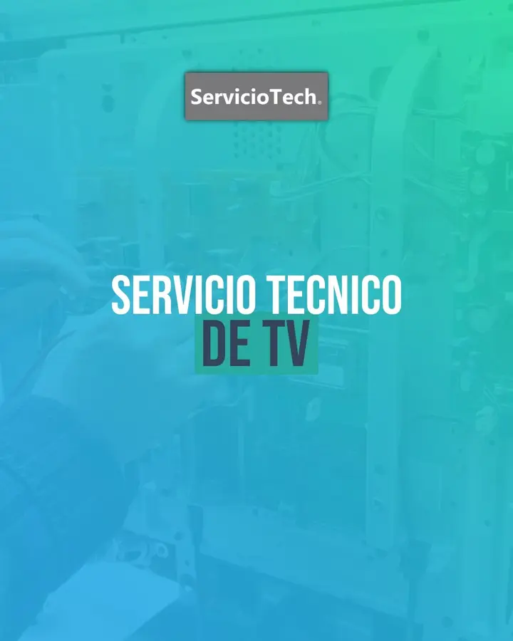
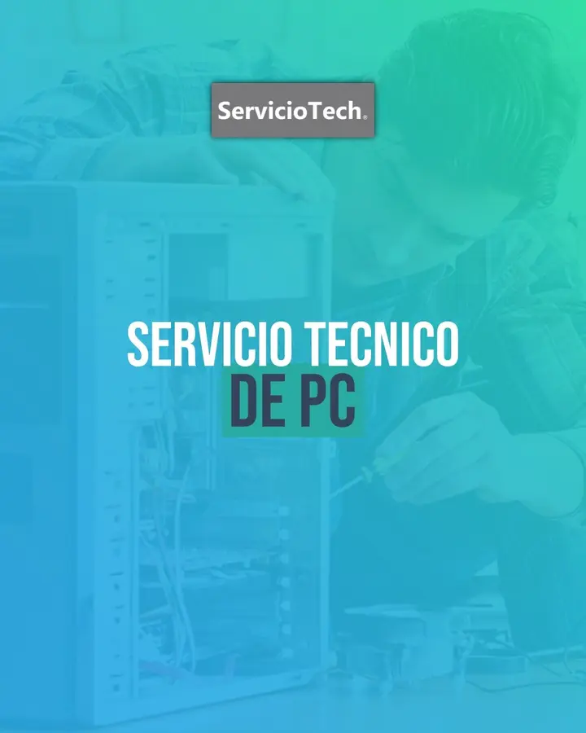
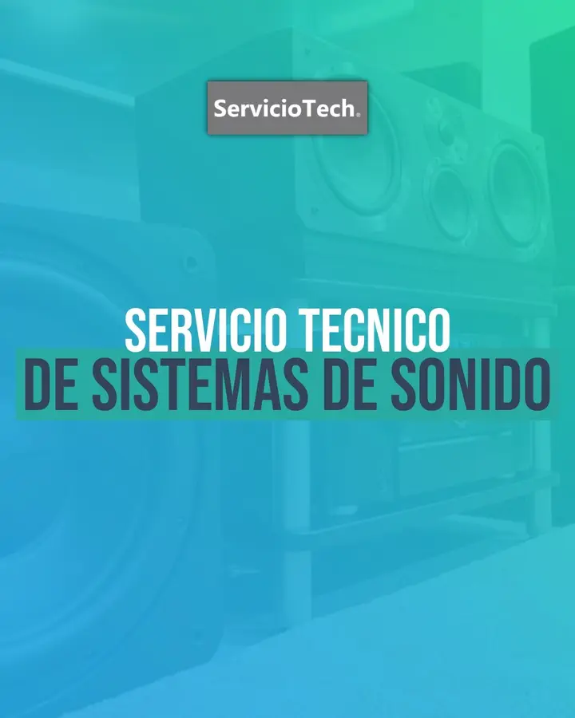

PC y notebooks
Diagnóstico, reparación, mantenimiento, optimización y actualización de equipos de escritorio y portátiles.
- Fallas de encendido y rendimiento
- Mantenimiento y temperaturas
- Actualizaciones de hardware
Servicio técnico profesional · Chivilcoy
Diagnosticamos y reparamos tus equipos. Atención personalizada, comunicación clara y garantía.

Servicios
Evaluamos el problema y te explicamos las alternativas. Avanzamos solo cuando la solución tiene sentido para vos.
Diagnóstico, reparación, mantenimiento, optimización y actualización de equipos de escritorio y portátiles.
Revisión técnica, mantenimiento y reparación de consolas para resolver fallas y mejorar su funcionamiento.
Diagnóstico y reparación de fallas de funcionamiento para que puedas decidir con información clara.
Diagnóstico y reparación de fallas habituales.
Revisión técnica de equipos y sistemas de audio.
Reparación y mantenimiento de controles.
Orientación para elegir, actualizar o mejorar equipos.
Cómo trabajamos
Sin formularios ni pasos innecesarios. Coordinamos por WhatsApp. Recibimos tu equipo en el local. Con cita previa o según disponibilidad.
Coordinar una revisiónEscribinos por WhatsApp con el tipo de equipo y la falla que presenta.
Coordinamos para que lo acerques a Moreno 318, Chivilcoy.
Revisamos la falla y te comunicamos la solución antes de avanzar.
Realizamos el trabajo, verificamos el funcionamiento y entregamos con garantía.
Nuestro trabajo
Mantenemos, actualizamos y mejoramos tus equipos. Así extendemos su vida útil.


Opiniones
Experiencias compartidas por clientes de ServicioTech en Google.
Ver perfil en Google“Excelente y rápido. Lo recomiendo.”
“Excelente y altamente recomendable. Gracias.”
“El arreglo del control de la Play quedó perfecto.”
Ubicación y horarios
La atención es exclusivamente en el local, con cita previa o según disponibilidad.
Consulta rápida
Contanos qué le pasa y coordinamos los próximos pasos.